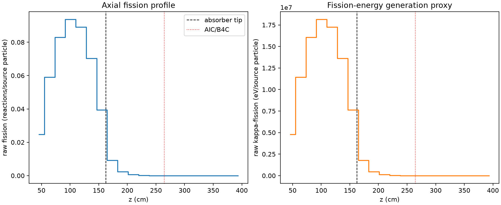
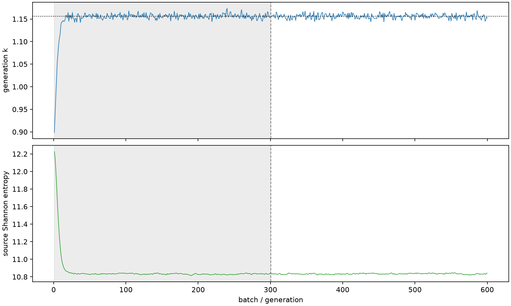

| field | value |
|---|---|
| experiment | V2-STAGE_128_OGRENCI_04-0023 |
| k | 1.1561539874834212 |
| MC standard error | 0.00019463279099001042 |
| seconds | 1008.1031800380006 |
| acceptance | not_assessed |
| convergence | review_required |
Completed is output integrity only; physical and statistical review required. Zero tallies do not prove zero production or zero uncertainty.
| diagnostic | value |
|---|---|
| geometric fuel voxels | 5280 |
| zero fission tally voxels | 1216 |
| low signal fuel voxels | 2354 |
| low signal fission share | 0.00010789336494969113 |
| low signal kappa share | 0.000107922174044318 |
| important fission share | 0.9500022028283023 |
| previous filter included | 2926 |
| duration estimate s | 1562.5173488400023 |
| actual minus estimate s | -554.4141688020018 |
| fission relative MC error | statistics |
|---|---|
| all_geometric_fuel | {"voxels": 5280, "positive_mean_voxels": 4064, "zero_mean_voxels": 1216, "undefined_relative_error_voxels": 1216, "median": 0.017462931723817618, "p95": 0.9907972405650093, "maximum": 1.0000000000000002} |
| low_signal | {"voxels": 2354, "positive_mean_voxels": 1138, "zero_mean_voxels": 1216, "undefined_relative_error_voxels": 1216, "median": 0.6385434943703341, "p95": 1.0, "maximum": 1.0000000000000002} |
| important_95pct | {"voxels": 1726, "positive_mean_voxels": 1726, "zero_mean_voxels": 0, "undefined_relative_error_voxels": 0, "median": 0.006429494580102491, "p95": 0.010397687303791541, "maximum": 0.011871390124012744} |
| outside_previous_filter | {"voxels": 2354, "positive_mean_voxels": 1138, "zero_mean_voxels": 1216, "undefined_relative_error_voxels": 1216, "median": 0.6385434943703341, "p95": 1.0, "maximum": 1.0000000000000002} |
| kappa_fission relative MC error | statistics |
|---|---|
| all_geometric_fuel | {"voxels": 5280, "positive_mean_voxels": 4064, "zero_mean_voxels": 1216, "undefined_relative_error_voxels": 1216, "median": 0.017436020239290514, "p95": 0.9907679744204404, "maximum": 1.0000000000000002} |
| low_signal | {"voxels": 2354, "positive_mean_voxels": 1138, "zero_mean_voxels": 1216, "undefined_relative_error_voxels": 1216, "median": 0.6377972418250957, "p95": 1.0, "maximum": 1.0000000000000002} |
| important_95pct | {"voxels": 1726, "positive_mean_voxels": 1726, "zero_mean_voxels": 0, "undefined_relative_error_voxels": 0, "median": 0.006422605868255433, "p95": 0.010385671634112135, "maximum": 0.01185833883621814} |
| outside_previous_filter | {"voxels": 2354, "positive_mean_voxels": 1138, "zero_mean_voxels": 1216, "undefined_relative_error_voxels": 1216, "median": 0.6377972418250957, "p95": 1.0, "maximum": 1.0000000000000002} |
| axial bin | fission share | kappa-fission share |
|---|---|---|
| 1 | 0.05245988550863317 | 0.05246176035488509 |
| 2 | 0.12528483651123457 | 0.12528320997311804 |
| 3 | 0.17583604791118815 | 0.1758337374284473 |
| 4 | 0.19845723994281997 | 0.19845440081457275 |
| 5 | 0.18887060178866985 | 0.18886847775232277 |
| 6 | 0.14918544593562644 | 0.14918351857083811 |
| 7 | 0.08343687982750053 | 0.08343757447400349 |
| 8 | 0.019667391964639812 | 0.01967342912123825 |
| 9 | 0.0050465607369184024 | 0.005048191150407656 |
| 10 | 0.001300795446060857 | 0.0013012368686928118 |
| 11 | 0.0003386876841402412 | 0.0003388043664203134 |
| 12 | 9.088588052280699e-05 | 9.091241775995957e-05 |
| 13 | 1.944298823995805e-05 | 1.9446951291468003e-05 |
| 14 | 3.684632023134513e-06 | 3.685247516843798e-06 |
| 15 | 1.250692470059866e-06 | 1.2518963349432793e-06 |
| 16 | 3.1102590091270956e-07 | 3.1110305890309637e-07 |
| 17 | 4.7387151195713757e-08 | 4.737363199009702e-08 |
| 18 | 4.1362599421368285e-09 | 4.135459406892347e-09 |
| 19 | 0.0 | 0.0 |
| 20 | 0.0 | 0.0 |
Histories include the inactive-to-active transition at batch 300. kappa-fission approximates fission energy production, not total heat deposition.

